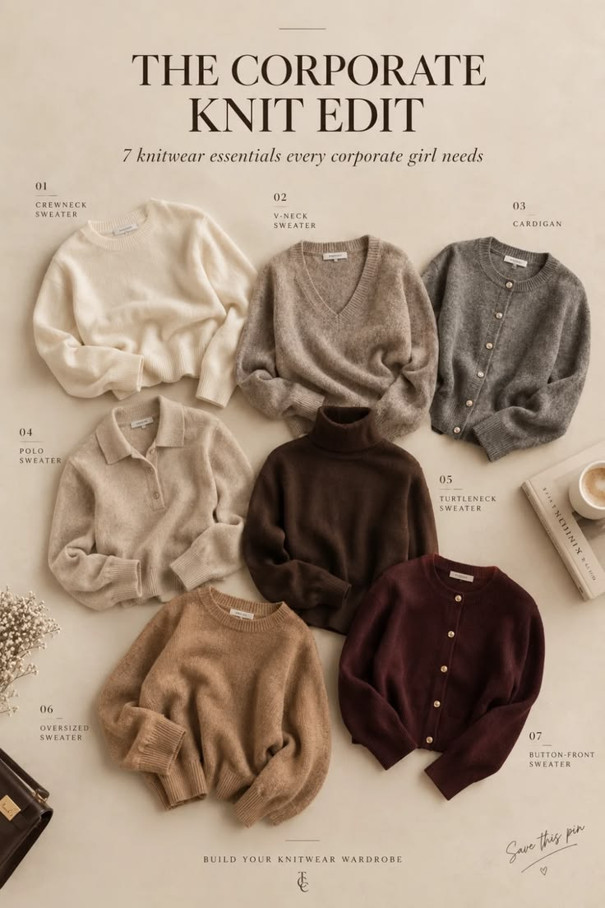

Workwear Essentials
Knitwear essentials: 7 sweaters
Style inspiration
Seven sweater types every work wardrobe needs, from a classic crewneck to a turtleneck and a cardigan.
Styling tips
- Start with neutrals: cream, grey, camel and chocolate.
- Choose soft, fine-gauge knits that layer under blazers.
- Add one rich color, like burgundy, for variety.
Get the look
This photo is styling inspiration. There is no direct link to these exact pieces, so these are close matches you can find.
Your fit:
Classic crewneck sweaterBudget findsPremium picks
Find similarTurtleneck sweaterBudget findsPremium picks
Find similarV-neck sweaterBudget findsPremium picks
Find similarKnit cardiganBudget findsPremium picks
Find similarMock neck sweaterBudget findsPremium picks
Find similarPrices change often, so check the current price on Amazon. Budget finds and Premium picks open the same search filtered by price. As an Amazon Associate I earn from qualifying purchases. Links on this site are affiliate links.